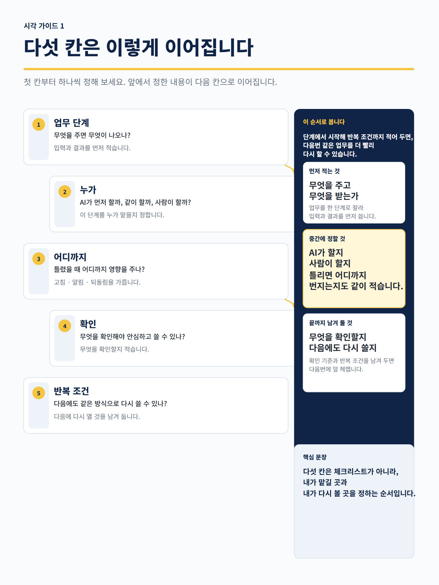
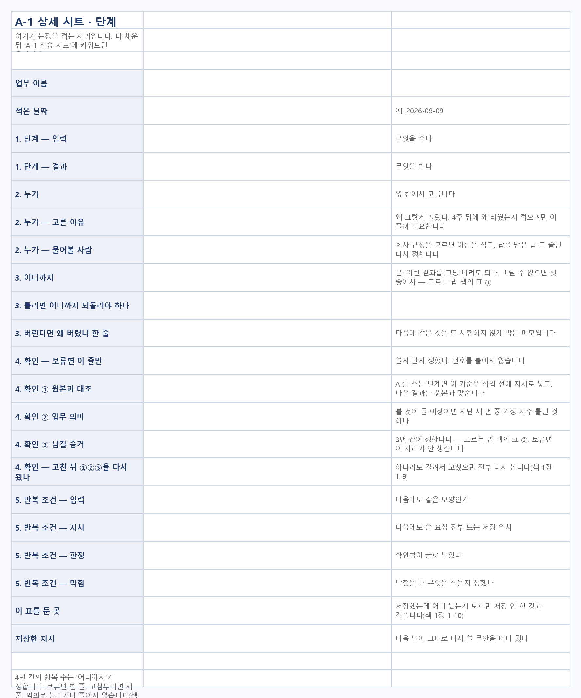

초안은 빨리 나왔는데
그대로 써도 되는지 몰라 처음부터 다시 확인합니다.
프롬프트를 더 모으기보다, 내 업무 한 단계를 직접 나누고 다음번에도 다시 쓸 기준을 남기는 실무 워크북입니다.
도구 사용법보다 먼저, 어디까지 맡기고 무엇을 확인할지 정해야 합니다.
그대로 써도 되는지 몰라 처음부터 다시 확인합니다.
글꼴·숫자·칸 위치 중 무엇을 봐야 할지 막막합니다.
내 업무가 무료 계정에서 어디까지 되는지 시험해 본 적이 없습니다.
실행 전에는 비어 있던 판단 세 칸이, 업무를 한 번 해본 뒤 어떻게 채워지는지 같은 위치에서 비교합니다.

읽고 이해하는 데서 끝나지 않고 실제 업무 하나를 적게 만드는 순서입니다.
엑셀은 자동 계산이나 AI 실행 도구가 아닙니다. 실제 업무, 시험 결과, 다음번 수정 내용을 직접 기록하는 파일입니다.

실제 화면 크게 보기 ↗모바일에서는 이미지를 눌러 원본 크기로 확인할 수 있습니다.
지금 막힌 장을 고르거나, 53쪽의 30분 시작 순서부터 실행하세요.
두 본품과 사용 안내 README를 ZIP 하나로 전달합니다.
상품의 범위와 한계를 먼저 확인하세요.
아닙니다. 필요한 장을 고르거나 53쪽의 30분 시작 순서부터 실행할 수 있습니다.
아닙니다. 내 업무와 판단을 직접 적고 비교하는 기록 워크북입니다.
0장에서 가짜 자료로 파일 하나를 올려 직접 실행하는 순서부터 시작합니다.
보장하지 않습니다. 반복 업무 한 건을 직접 시험하고 다음번 기준을 남기는 방법을 제공합니다.
환불·취소는 결제 페이지에 표시된 판매 채널 및 크리에이터 기준이 적용됩니다. 결제 전에 해당 기준을 확인해 주세요. 파일이 열리지 않으면 hmbgaq4@gmail.com으로 알려 주세요.